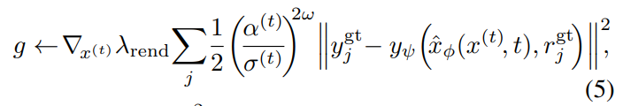

Notes for “Single-Stage Diffusion NeRF: A Unified Approach to 3D Generation and Reconstruction” (ICCV 2023)
目录
一、摘要
二、简介
三、相关工作
四、背景
五、方法
六、实验
摘要
3D-aware图像合成包括一系列任务，比如场景生成和新视角合成。尽管针对特定任务的方法有很多，建立一个全面的模型仍然具有挑战性。SSDNeRF (Single-Stage Diffusion NeRF) 提出了一种综合的方法，使用扩散模型从多视角的图像中学习一个通用的隐式神经场（NeRF）。本文提出新的端到端的训练范式，联合优化 NeRF auto-decoders 和 latent diffusion model，同时进行3D重建和学习先验，适用于稀疏视角输入。在测试时，可以直接采样扩散先验，用于非条件生成；或者将它和任意视角的观测数据结合起来，用于NeRF重建。相比于其他针对特定任务的非条件生成、单/稀疏视角3D重建方法，SSDNeRF能得到鲁棒性相当或者更好的结果。
简介
latent diffusion model (LDM)一般需要两阶段训练，其中第一阶段预训练可变自编码器（VAE）或解码器，没有扩散模型的参与。对于diffusion NeRFs，两阶段训练会把噪声引入潜在编码，尤其是用稀疏视角的数据训练时，因为逆向渲染天然具有不确定性。于是，本文提出了一种新的一步训练范式，支持diffussion和NeRF权重的端到端学习。该方法融合了生成和渲染的偏差，提升了模型表现，允许在稀疏视角数据上训练。另外，学习到的非条件扩散模型的3D先验可以被用于测试时的随机视角场景采样。
贡献：
- 提出SSDNeRF，一个通用的非条件3D生成和基于图像重建的模型
- 提出一阶段训练范式，同时从多视角图像中学到NeRF重建和扩散模型；可以在稀疏的（每个场景3个视角）数据上训练
- guidance-finetuning sampling scheme，测试时能将学到的扩散先验用于3D重建
相关工作
3D GANs
通过将基于投影的渲染结合到生成器中，可以将GAN用于3D生成。3D GANs主要被应用于非条件生成。虽然通过GAN inversion可以从图片生成3D，有限的潜在表达能力无法保证忠实性。
以视角为条件的回归与生成
稀疏视角3D重建可以通过对新视角进行线性回归来实现。一些结构将图片编码为volume feature，可以通过体渲染被投影到受到监督的目标视角。但是，这些方法不能解决ambiguity，无法生成多样的有意义的内容。
对比之下，image-conditioned 生成模型能更好地合成差异显著的内容。3DiM提出从view-conditioned 图像扩散模型生成新视角，但是该模型缺少3D consistency bias。另外有一些工作将image-conditioned 2D 扩散模型的进行蒸馏，把得到的先验加入NeRF，从而加强3D约束。这些方法和我们的方法是并行的：它们在图像空间中建模跨视角的关系，而我们的模型本质上是3D的。
自解码器和扩散NeRF
NeRF对每个场景的fitting scheme可以通过在所有场景之间共享部分参数被推广到多场景，其余参数可以被看做单个场景的编码。因此，多场景NeRF可以被训练成自解码器，code bank和共享的解码权重通过联合学习得到。场景编码可以被看成是带有高斯先验的latents，可以实现3D补全甚至生成。然而，latents和3D GANs一样，不能完全表达重建物体的细节。一些工作用潜在扩散先验对基本自解码方法进行改进。DiffRF利用扩散先验进行3D补全。这些方法用分开的两步训练自解码器和看扩散模型，会遇到3.2中提到的问题。
背景
NeRF作为自解码器
NeRF 将光场表示成通过一块体积沿着光线的 radiance 的积分，将场景的几何和外观表示成与位置和观察方向相关的函数。NeRF 通过在所有场景之间共享部分模型参数，可以推广到多场景问题。给出多个场景的观测数据$\{y_{ij}^{gt}, r_{ij}^{gt}\}$，其中$y_{ij}^{gt}, r_{ij}^{gt}$是第$i$个场景中的第$j$对RGB像素值和光线。通过最小化以下L2损失，可以优化每个场景的编码$\{x_i\}$和共享参数$\Psi$：
使用该目标函数，模型可以被训练成一个自解码器。场景编码$\{x_i\}$可以被看做latent codes，plenoptic函数可以被看做形为$p_\Psi(\{y_i\}|x,\{r_i\}) := \prod_j \mathcal{N}(y_j|y_\Psi(x,r_j),I)$的解码器，假设是独立高斯分布。
挑战：连接生成和重建：一个带有权重$\Psi$的自解码器可以进行非条件生成，但是，为了保证生成的连续性，我们需要低维的latent space和复杂的解码器，这使得优化latent code、重建真实感的任意视角变得更加困难。
Latent Diffusion Models
LDM 学习 latent space 的先验分布$p_\phi(x)$，使得潜在表示（例如，被用于图像的2D网格）更具有表达性。针对神经场生成，之前的工作采用了一个两阶段的训练模式，先训练自解码器得到每个场景的latent $x_i$，然后被当做真实数据来训练LDM。LDM将高斯分布$\epsilon \sim \mathcal{N}(0,I)$加入编码$x_i$，从而得到带有噪声的编码$x_i^{(t)} := \alpha^{(t)}x_i+\sigma^{(t)}\epsilon$，其中$t$是time step，$\alpha^{(t)}$和$\sigma^{(t)}$是noise schedule functions。去噪网络由$x_i^{(t)}$预测去噪后的编码$\hat{x}_i$，一般用简化的L2损失来训练：
其中$t \sim \mathcal{U}(0,T)$，$\omega(t)$是经验性的时间依赖的权重函数，$\hat{x}_{\Phi}(x_i^{(t)},t)$表示 time-conditioned 降噪网络。
Unconditioned/Guided Sampling：有了训练好的权重$\Phi$，我们可以通过一系列solvers（比如DDIM）从扩散先验中采样，迭代地对$x^{(x)}$去噪，直到$x^{(0)}$。另外，采样过程可以被rendering loss的梯度引导，这样在测试时能够从图像进行3D重建。
两阶段训练在3D任务中的局限性：通过基于渲染的优化得到的latent code是未定的，有噪声的pattern会干扰除噪网络。另外，不学习先验的稀疏视角重建NeRF非常困难。
方法
一阶段训练
loss的组成：rendering loss + diffusion prior term。为了简化，忽略了latent codes的不确定性（方差）：
场景编码$\{x_i\}$，先验参数$\Phi$和解码器参数$\Psi$在一个训练阶段中被连接优化。训练目标是最小化 negative log-likelihood (NLL) 的可变上限。
我们用近似上限替换diffusion NLL，这个技术被称为 score distillation。再加上经验性的权重因子，我们最后得到训练目标函数：
学习到的先验可以用来补全对于渲染来说不可见的部分。这对在稀疏视角数据上进行的训练来说很有效，三平面编码的表达力被严重低估了。
权重比：渲染对扩散的权重比$\lambda_{rend}/\lambda_{diff}$对于单阶段训练至关重要。为了使得超参数更广泛地适用于不同的场景设定，我们设计了一个经验性的weighting mechanism。扩散损失用场景编码的Frobenius norms 的 exponential moving average (EMA) 来正规化，表示为$\lambda_{diff} := c_{diff}/EMA(||x_i||_F^2)$，其中$c_{diff}$是 scale 常数；渲染权重由可见的视角数量$N_v$决定，表示为$\lambda_{rend}:=c_{rend}(1-e^{-0.1N_v})/N_v$，其中$c_{rend}$是 scale 常数。直觉地解释，基于可见视角数量的权重是对解码器中光线独立性假设的校正，从而防止渲染损失随光线数量线性地放缩。
和两阶段生成式神经场的比较：两阶段的方法在第一阶段忽视先验项，这相当于将$\lambda_{rend}/\lambda_{diff}$设为无穷大，导致场景编码biased and noisy。
Shue et al. 通过加入total variation (TV) regularization 得到较为光滑的先验，缓解这个问题；这和latent
space上的LDM约束相似。Control3Diff：在单一视角图像上训练的3D GAN生成的数据，被用来训练一个条件扩散模型。本文的方法直接将扩散先验加入进来，提高了端到端的coherence。
图像引导的采样和finetuning
为了进行更普适性的NeRF重建（从单视角到密集观测），我们提出先用图像引导采样，然后对采样到的codes进行finetuning。
近似的渲染梯度：

其中，$(\alpha^{(t)}/\sigma^{(t)})^{2\omega}$是基于信噪比的权重系数，超参$\omega$等于0.5或0.25。引导梯度结合非条件score预测，作为对除噪输出的纠正。
采用预测器-纠正器的采样方式，在DDIM的1个step和Langevin correction 的多个steps中修改，最终得到$x^{(0)}$。
仅仅使用重建引导不能实现真实感重建。我们重新使用了前面的训练目标函数，来finetune采样到的场景编码$x$，同时固定扩散和解码参数。
实现细节
实验
数据集：ShapeNet SRN, Amazon Berkeley Objects (ABO) Tables
非条件生成
在SRN Cars和ABO Tables上测试。Cars的挑战在于生成sharp and intricate textures，Tables包含各种各样的geometries with realistic materials。模型在训练集的所有图像上训练1M iterations。
生成问题的指标：FID, KID